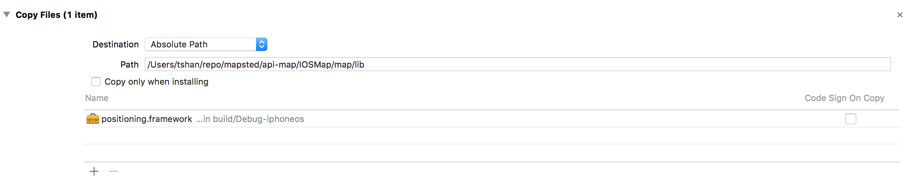

Copy Product Framework File
When working with framework project after build, it will create the .framework file under the DerivedData directory. A little bit hard for us to find. Also we might want to automatically import the framework to our test project or another project that import the framework. So after setting this up, we can build this project and it will copy the .framework to a location where you import it in another project automatically. What I need to do next is to next build the other project.
Add Copy Phrase
Open Xcode project, go to Target -> Build Phrase -> + -> New Copy Files Phase. Expand the new created copy file action. At this time we should already compile the .framework file, so drag the existing .framework file in there first. Select Destination to be absolute path and enter the path you want it to be copy to, then build the project.
Don’t check Copy only when installing because framework won’t have install process. After testing, I found it will copy after it build, so it should be fine.
